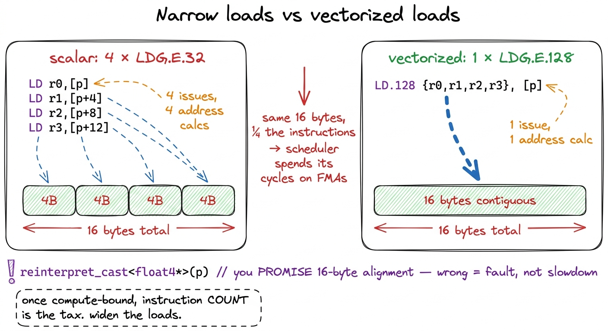
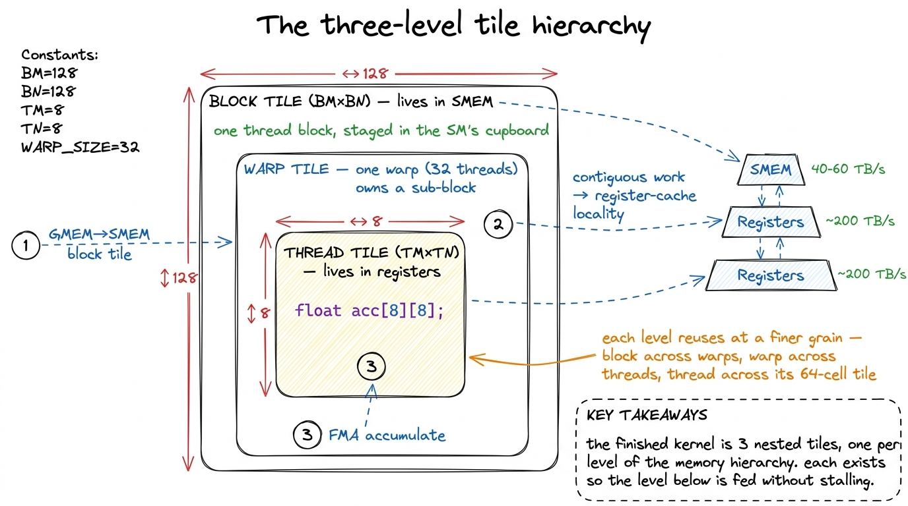
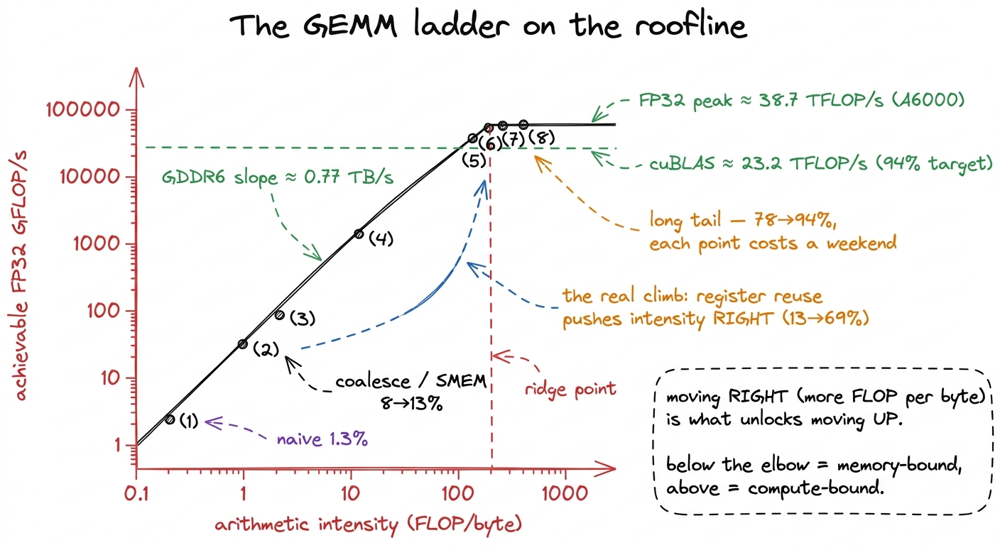
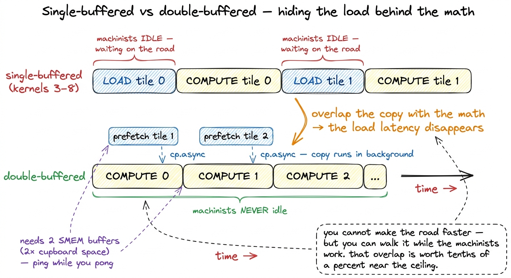

The ladder, end to end RECAP
We started this ladder with a kernel that hit a humiliating 1.3% of cuBLAS, and we are ending it — nine measured steps later — at 93.7%. That is a factor of roughly seventy, closed one hypothesis at a time, without a single trick we could not first see in a profiler. This article is the view from the top of the ladder. Before we get there, though, I want to make sure nobody who wanders in at the end is lost. So let me start from the very bottom and rebuild the whole picture — what the problem even is, why the naive version is so bad, and what each rung actually bought us. Then I will put all the kernels on one roofline, lay out the summary table you have been waiting for, and extract the handful of principles that are not really about GEMM at all. They are about any kernel you will ever write.
First, what are we even computing?
If you are new here, everything below hangs on one operation, so let us be concrete about it. GEMM stands for general matrix-matrix multiply: given a matrix A of shape M×K and a matrix B of shape K×N, produce C = A·B, which has shape M×N. Every output element C[i][j] is a dot product: you walk across row i of A and down column j of B, multiply the pairs, and add them up.
That is the whole thing. One output cell costs K multiplies and K adds — call it 2K floating-point operations, or FLOPs. There are M×N output cells. So the total work is 2·M·N·K FLOPs, and it does not change no matter how clever the kernel is. That number is fixed by the math. Everything in this article is about moving the data to feed that fixed pile of arithmetic without stalling.
Throughout the ladder we use one benchmark: a big square problem, M = N = K = 4092, in FP32 (single precision, 4 bytes per number). Plug it in: 2 · 4092³ ≈ 137 billion FLOPs per multiply.1 I keep to FP32 (SGEMM) numbers on this 4092² problem, following Simon Boehm's ladder on an RTX A6000. cuBLAS — NVIDIA's hand-tuned library, the same one they have polished for fifteen years — is the moving target we chase, which is why "% of cuBLAS" is a more honest yardstick than raw GFLOP/s. Raw numbers flatter you on a fast card; a fraction of the best-known kernel does not. On this problem cuBLAS reaches about 23.2 TFLOP/s, against an FP32 hardware peak near 38.7 TFLOP/s. Hold that number — 137 GFLOP — it will come back.
The question this whole ladder answers is deceptively simple: the arithmetic is fixed, so why is a naive kernel 70× too slow, and what exactly do we change to close the gap?
The one mental model: a workshop with a slow loading dock
Here is the picture I want you to carry through every section. Do not think of the GPU as a calculator. Think of it as a workshop.
Deep inside the workshop are the machinists — the arithmetic units, thousands of them, blindingly fast. Around them sits a tiny workbench (the registers), then a shared supply cupboard on each floor (the shared memory), and far outside, across a slow road, is the warehouse (global memory, the big DRAM). The machinists can only work on parts that are on their workbench. Every part has to travel: warehouse → cupboard → workbench → machinist.
The warehouse road is slow. On our A6000 the machinists can do about 38.7 trillion FLOPs a second, but the road from the warehouse delivers only about 768 GB/s. So the entire art of a fast kernel is: carry each part in from the warehouse once, and then use it as many times as you possibly can before it goes back. Every rung of this ladder is one more way to reuse a part instead of re-fetching it.
 figure rendering · The central mental model for the whole ladder. The math is cheap; the
figure rendering · The central mental model for the whole ladder. The math is cheap; the Rung 0: why the naive kernel is a disaster
The naive kernel (kernel 1) does the obvious thing: launch one thread per output element, and let each thread compute its own dot product straight from global memory. It reads a whole row of A and a whole column of B, multiplies, accumulates, writes one number. Clean, correct, and about 1.3% of cuBLAS — 309 GFLOP/s.
Why so bad? Let us do the napkin math, because this is where the whole story starts. The math needs 137 GFLOP. The minimum data you must touch is small: read A and B once (≈134 MB — each is 4092²·4 B ≈ 67 MB), read the old C once and write the new C once (a full GEMM computes C = αA·B + βC, so the destination is both read and written — 2·67 ≈ 134 MB), for a theoretical floor near 268 MB of traffic.2 If you drop the βC term and treat it as a pure product C = A·B, the floor is instead read A + read B + write C = 3·67 ≈ 201 MB. The 268 MB figure is the honest one for a general SGEMM, which is what cuBLAS is doing under the hood — so that is the floor we hold the naive kernel against. But the naive kernel does not read each element once. Every output cell re-reads a full row and a full column from the warehouse, and neighboring threads re-read the same rows and columns over and over. Measured, the naive kernel moves roughly 548 GB — more than two thousand times the floor.3 The naive kernel's crime is not logically reading more data — mathematically the dot products are the same — it is that it re-fetches the same rows and columns from DRAM again and again instead of reusing them, and (as we will see in the next rung) it wastes most of every 128-byte transaction. 548 GB against a 268 MB floor is the number the profiler screams about.
At 768 GB/s, moving 548 GB takes about 0.7 seconds, while the actual math should take milliseconds. The machinists sit idle 99% of the time waiting on the road. That is what "1.3%" means physically: the workshop is starving. Every rung from here is about feeding it.
Rung 1: coalescing — stop wasting the truck you already paid for
The first fix touches no math at all. It is a one-line remap of which thread handles which output, and it is the highest-leverage change in the entire ladder: 1.3% → 8.5%, a 6.5× win from zero arithmetic change (kernel 2, 1986 GFLOP/s).
To see why, you have to know one hardware fact. The GPU does not run threads one at a time. It runs them in gangs of 32 called a warp, in lockstep. When a warp issues a load, the memory system does not fetch 32 little scattered values — it fetches in fixed 128-byte transactions (four 32-byte sectors). Think of the truck from the warehouse: it always arrives with a 128-byte pallet, whether you needed all of it or one box.
So here is the natural question: what happens if the 32 threads of a warp ask for 32 addresses that are far apart? Then each thread's value sits on a different pallet, and you dispatch up to 32 trucks to serve one warp — and every truck arrives 127/128 empty. That is uncoalesced access, and it is exactly what the naive index pattern does. Reorder the threads so that consecutive threadIdx.x maps to consecutive addresses, and now all 32 values ride on one pallet: one truck, fully loaded, serves the whole warp. That is coalescing.
 figure rendering · The single most cost-effective change on the ladder. No math changed —
figure rendering · The single most cost-effective change on the ladder. No math changed —The rule generalizes to every kernel you will write: index so that consecutive threadIdx.x maps to consecutive memory, and check this before anything else. See memory coalescing for the full mechanics. It costs a line and it is routinely worth a factor of several.
Rung 2: shared memory — a cupboard on every floor
Coalescing fixed how we fetch, but we are still fetching the same tiles from the warehouse repeatedly. The next idea attacks re-reads directly.
Recall the workshop cupboard: shared memory (SMEM), a fast on-chip scratchpad — up to about 100 KiB per SM on the A6000 — that every thread in a block can see, and that the programmer manages by hand.4 That per-SM SMEM maximum is not a hard constant. You opt into a bigger carveout with cudaFuncSetAttribute and cudaFuncAttributePreferredSharedMemoryCarveout, trading it against L1, and the exact usable max depends on the split you request. The cache-blocking kernel here only needs a modest tile: two 32×32 FP32 tiles is 2·32·32·4 B = 8 KiB per block. The plan (kernel 3): the block cooperatively loads a tile of A and a tile of B from the warehouse into the cupboard once, then every thread does its multiplies against the cupboard copy instead of walking back to the warehouse. See shared memory / L1 for how SMEM and L1 share the same silicon.
This got us to 12.8% (2980 GFLOP/s) — and here is the honest part I want to dwell on, because it is the most instructive moment on the whole ladder. That is a disappointingly small jump. We staged data in fast memory and barely moved. Why?
Because we relieved the wrong bottleneck. Each thread still computes exactly one output element. It loads a value from the cupboard, uses it once, throws it away, loads the next. We took the pressure off the warehouse road only to slam it onto the cupboard door. The profiler confirmed it: the kernel is now bound on shared-memory loads. Which tells us precisely what to fix next — and it is the move that matters most.
Rung 3: register tiling — the pivot of the entire ladder
This is the one. Kernels 4 and 5 are where the real work happens, and if you understand only one rung, make it this one.
The concept is arithmetic intensity: FLOPs performed per byte moved (see arithmetic intensity). Everything so far lowered the denominator — move fewer, better-packed bytes. Register tiling raises the numerator — do far more math per byte you have already carried in.
Here is the natural question that unlocks it: if a thread has already paid to load a value onto its workbench, why use it only once? In a dot product, one loaded element of A participates in the output of a whole row; one element of B participates in a whole column. So let each thread compute not one output but a small tile of them — 8 outputs in kernel 4, an 8×8 = 64-element tile in kernel 5 — accumulating into registers, the workbench itself (the register file is 256 KB per SM, 65536 32-bit slots, up to 255 per thread — see the register file).
Let me do the arithmetic by hand, because the payoff is combinatorial and I want you to feel it. To compute an 8×8 output tile you load 8 values of A (one column strip) and 8 values of B (one row strip) from the cupboard into registers: 16 loads. From those 16 values you form the outer product — every A against every B — which is 8 × 8 = 64 multiply-adds: 64 FMAs. Sixteen loads bought sixty-four FLOPs. The naive version got one FLOP per two loads. That is roughly a 32× jump in reuse, and it is what turns a memory-bound kernel compute-bound.
 figure rendering · The register tile is the hinge of the entire ladder. Loading 16 values
figure rendering · The register tile is the hinge of the entire ladder. Loading 16 valuesThat single structural change took us from 12.8% to 36.5% (kernel 4, 8475 GFLOP/s), then to 68.7% (kernel 5, 15972 GFLOP/s) — the biggest climb on the board. We crossed the line described in the three regimes: out of the memory-bound regime and into the compute-bound one. The profiler's complaint changed accordingly, from memory-pipeline congestion to the math-instruction queue (the MIO pipe) throttling — and that is a bottleneck you want, because it means the expensive silicon is finally the thing you are waiting on.
The transferable lesson: staging data in fast memory is necessary but not sufficient. You only get paid when each staged byte is reused many times out of registers. On any kernel, the single question that predicts your ceiling is: how many FLOPs does each loaded value participate in?
Rung 4: vectorize — fewer, wider instructions
By kernel 6 we were compute-bound, but still issuing more memory instructions than we needed. When you are compute-bound, instruction count itself becomes the tax: every cycle the warp scheduler spends computing an address or issuing a narrow load is a cycle it is not issuing an FMA.
The fix is to load four floats in one instruction instead of four instructions. We switch every global load and store to float4 — 128 bits at a time — which lets the compiler emit the widest LDG.E.128 variant and quarters the number of load/store instructions. There is a catch worth stating plainly: the compiler cannot prove a float* is 16-byte aligned, so you must promise it by casting to float4* (reinterpret_cast<float4*>). Get the alignment wrong and you do not get a slowdown — you get a misaligned-address fault.5 We also transpose the As tile during the GMEM→SMEM copy so the inner loop reads it down contiguous rows. It is a small change with an outsized effect on the SMEM access pattern, and it is the kind of thing that only shows up once you are staring at the profiler wondering where the last few percent went. Kernel 6 reached 78.4% (18237 GFLOP/s).

figure rendering · When the machinists are already busy, the cost is the paperwork. FourThe general rule: once you are compute-bound, wide loads (float4, int4), fused ops, and anything that lowers issued instructions per useful FLOP buys the next few points.
Rungs 5 and 6: match the machine's hierarchy, then search
The last two rungs stop inventing new ideas and start fitting the code to the exact machine.
Autotuning (kernel 7) accepts an uncomfortable truth: the best tile sizes — BM, BN, BK, TM, TN — are not derivable from first principles. They trade off register pressure against occupancy against SMEM footprint, and the winning combination depends on the specific silicon. So you stop deriving and start measuring: sweep the space, benchmark each config, keep the best. That alone went 78.4% → 84.8% (19721 GFLOP/s) with no new concept — just search.6 The optimal config genuinely differs by GPU. Boehm found the A6000 liked BM=BN=128, BK=16, TM=TN=8, while an A100 preferred a smaller BM=BN=64, TM=TN=4 — and running the A6000's config on the A100 left about 5% on the floor. This is exactly why production libraries ship dozens of pre-tuned kernels and dispatch by shape and architecture at runtime.
Warp-tiling (kernel 8) adds the missing middle layer of the parallelism hierarchy: block → warp → thread. Between the block tile (in the cupboard) and the thread tile (on the workbench), we give each of the block's warps its own contiguous sub-tile to own. Why does inserting a layer that does no new arithmetic help at all? Because the 32 threads of a warp share a warp scheduler and draw from the same register file, and keeping their work contiguous improves register-cache locality and lets the scheduler feed them without thrashing. That contiguity is worth the final climb to 93.7% (21779 GFLOP/s).

figure rendering · The finished kernel is three nested tiles, one per level of the memoryThe whole ladder on one table
Now that every rung is rebuilt from the ground up, here is the summary table you have been waiting for — every kernel in order, its throughput, and its fraction of FP32 cuBLAS on the same A6000 running the large square SGEMM. This is the one table the style spec allows, and it earns its place.
| # | Kernel | The one idea | GFLOP/s | % of cuBLAS |
|---|---|---|---|---|
| 1 | Naive | one thread per output element | 309 | 1.3% |
| 2 | GMEM coalescing | reorder threads so a warp reads contiguous memory | 1986 | 8.5% |
| 3 | SMEM cache-blocking | stage tiles of A/B in shared memory, reuse per block | 2980 | 12.8% |
| 4 | 1D block-tiling | each thread computes 8 outputs, accumulate in registers | 8475 | 36.5% |
| 5 | 2D block-tiling | each thread computes an 8×8 register tile | 15972 | 68.7% |
| 6 | Vectorized access | float4 loads/stores, transpose As on the way in | 18237 | 78.4% |
| 7 | Autotuning | search BM,BN,BK,TM,TN empirically | 19721 | 84.8% |
| 8 | Warp-tiling | add a warp-level tile between block and thread | 21779 | 93.7% |
| — | cuBLAS | fifteen years of NVIDIA tuning | 23250 | 100% |
Read the last column as a story. Two changes — coalescing and shared memory — took us from 1.3% to 12.8%, roughly a 10× swing, and neither touched the math. The three tiling kernels are the real climb: 12.8% → 68.7% is where we stopped being memory-starved and started keeping the FMA pipes busy. And the last three — vectorize, autotune, warp-tile — are the long tail, each buying single-digit points at rapidly rising engineering cost. That curvature is the most important thing on the page, so let me draw it on the roofline.

figure rendering · Every kernel is one dot. Optimization is walking rightward up the memoWhy the curve flattens — and why that is the roofline, not a failure
Look at the shape of diminishing returns: 1.3 → 8.5 → 12.8 is steep, 12.8 → 36.5 → 68.7 is the climb, and 68.7 → 78.4 → 84.8 → 93.7 crawls. Boehm put it bluntly: the first six kernels to 80% took two weekends; the last two, to 94%, took four more. The last six points cost more engineering than the first sixty. Why is that not just us running out of talent?
Because it is the roofline asserting itself, and we can prove it with the same napkin we have used all along. The roofline says a kernel is bounded by whichever is slower: the compute at the top, or the memory bandwidth on the slope. Do the two times for our problem. The math is 137 GFLOP; at the ~30 TFLOP/s the roofline uses for the achievable ceiling, that is about 4.5 ms of pure computation. The memory floor is the same ~268 MB we computed at the bottom of the ladder; at 768 GB/s that is about 0.35 ms of transfer. The computation takes roughly 10× longer than the memory — which is the mathematical statement of "this problem should be compute-bound." Once a kernel actually reaches the compute ceiling, there is no order-of-magnitude win left by definition; you are pressed flat against the top roof.
So the early rungs were walking rightward — raising arithmetic intensity until the memory slope stopped being the wall. Every rung after the elbow was pushing upward against a fixed FP32 ceiling, where wins are bounded. The picture told us where the easy money was before we wrote a line. And what is left in that final 6% gap to cuBLAS is exactly the kind of work that buys tenths of a percent:
- Double-buffering the GMEM→SMEM copies, so the block prefetches the next tile into the cupboard while the machinists chew on the current one — hiding load latency behind compute (see double buffering & cp.async).

figure rendering · Once you are pressed against the compute roof, the only latency left t- Eliminating shared-memory bank conflicts by padding the SMEM layout, so 32 threads never queue on the same bank (see bank conflicts).
- cuBLAS's specialization itself: it is not one kernel but 16+, dispatched by shape. At
256×256it firesampere_sgemm_64x32_sliced1x4_nnplus a split-K reduction kernel; at large sizes it switches toampere_sgemm_128x64_nn. We wrote one kernel; cuBLAS ships a library and picks.7 On newer hardware there is another whole tier above this that the A6000 cannot reach: Hopper addswgmmatensor-core instructions and TMA-driven async copies, and Blackwell goes further withtcgen05and TMEM. Those are not tweaks to this kernel — they are a different machine, and each is its own article. The A6000 ladder ends honestly at 93.7% of this card's cuBLAS.
The five moves that transfer to any kernel
Strip the GEMM specifics away and what is left is a general playbook. I have used every one of these on kernels that have nothing to do with matrix multiply — softmax, layernorm, attention. They are the moves, in the order the profiler usually hands them to you:
- Coalesce before anything else. Index so consecutive
threadIdx.xhits consecutive memory. A one-line change, routinely worth several ×. - Tile into shared memory to kill re-reads. Load once, reuse across the block. Necessary — but not the finish line.
- Reuse in registers — this is the whole game. Each thread computes a tile; each loaded value feeds a whole row or column of outputs. This is what flips memory-bound to compute-bound.
- Vectorize once compute-bound. Wide loads and fewer instructions per useful FLOP.
- Make the hierarchy explicit, then autotune. Block → warp → thread tiles, and let measurement pick the exact sizes for this card.
The habit, one more time
If you take one thing from this whole worklog, take the loop, not the kernels. Every rung was the same four beats: state a hypothesis about the bottleneck, write the smallest kernel that tests it, profile it, and let the profiler — not intuition — pick the next move. The naive kernel said "memory," so we coalesced. Coalescing said "reuse," so we tiled to SMEM. SMEM said "not enough work per byte," so we tiled to registers. Registers said "instruction count," so we vectorized. Vectorizing said "you have not matched the machine," so we tiled by warp and autotuned. Each move was handed to us by the previous measurement.
That is the transferable skill, and it is why the three regimes diagnostic sits at the front of this course. You do not need to memorize eight kernels. You need to be able to look at any kernel, in under a minute, and answer one question: what is it waiting on? Answer that honestly, again and again, and you will climb any ladder — GEMM or otherwise — from a humiliating single-digit percentage to something a hiring manager, and NVIDIA, will respect.